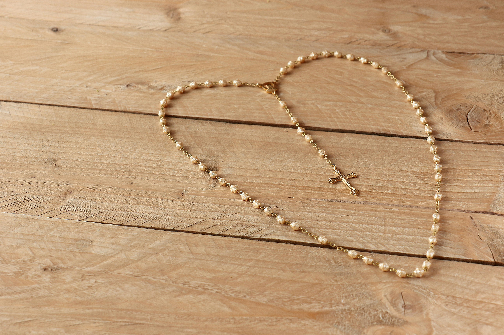

Here are some popular and beautiful Marian practices and devotions. They encourage and foster a greater love for our Mother.

To pray it, it is helpful to have a physical rosary. One begins with the cross, then around the beads, ending at the three-way intersection. Usually, when people "pray the Rosary," what is being prayed is called a chaplet of the Rosary - reflecting on five Mysteries (there are different sets of Mysteries depending on the occasion or day of the week). A full-length Rosary consists of meditating on all twenty Mysteries. In the Rosary (chaplet) one Mystery is reflected upon during ten Hail Marys, and this is repeated for the rest of the five Mysteries. For more details on how to pray it, check out this quick guide on how to pray the Rosary.
The Miraculous Medal was revealed to Saint Catherine Labouré in the 1800s by the Blessed Mother,
who showed the saint the design of the medal and told her to have a medal made in that design.
Mary told her, "Those who wear it will receive great graces, especially if they wear it around
their neck." It is not some sort of superstitious or "good luck" charm, notes the Association
of the Miraculous Medal, but rather "a testimony to faith and the power of trusting prayer.
Its greatest miracles are those of patience, forgiveness, repentance, and faith."
Many Catholics wear the Medal as a sign of trust and devotion to Mary.
Visit this page to learn more about the specifics and meanings of the symbols on the Medal.
There are a few different kinds of scapulars, but one of the most popular is the Brown Scapular. It is an extension of the habit of the Carmelite Order.
This doesn't mean that wearers take on the same vows religious take on.
According to tradition, Mary gave the Brown Scapular to St. Simon Stock, promising, "Whosoever dies wearing this Scapular shall not suffer eternal fire."
The Church sees the Scapular as "a sign of our belonging to Mary and
pledge of her maternal protection in this life and the next.
It is also a sign of three entwined elements: a) belonging to the Carmelite
'family,' b) consecration to and trust in Mary, and
c) an incentive to imitate our Lady's virtues,
especially her humility, chastity, and prayerfulness. That is all."
There is no offical statement from the Church on any "rewards" from wearing it. However, for the faithful, it is simply a sign of love and trust in Mary. Wearing one around your neck constantly reminds you that you belong to God through belonging to Mary, for it is through Her that any offerings to God are most effective.
Any Catholic faithful can wear and receive these graces, with the help of a priest who enrolls him/her (this can consist of a prayer and a blessing). In fact, the Sisters of Carmel say that "[a]ll the Catholic faithful should be enrolled [in the Brown Scapular]".4
After enrollment, one commits to some practice like a specific set of prayers (for the specific practice, one should ask the priest doing the enrollment).
Visit this page for a general overview of the Scapular and this page for more specifics on the Scapular.
Here is also an FAQ page on the Brown Scapular by the Sisters of Carmel.
At His final moments on the Cross, Jesus gives Mary to us and us to Her (Jn 19:25-27). Consecration to Mary is essentially entrusting ourselves to Mary, to look to Her and completely give ourselves to Her, because as the saints have written, if God gave salvation of the world (the Incarnation of Jesus) through Her, then it is also through Her we must look. She who raised Jesus - Love and Life Himself - will surely also raise those children of Hers well and to the greatest holiness. As Saint Maximilian Kolbe explains, Mary will "give birth" to Jesus within us, making us more and more like Her Son.
There are different ways to prepare for consecration to Mary, and this
consecration is renewed every so often after. The exact time between
renewals depends on the person, but daily to annually is a good time.
Maximilian Kolbe and Louis de Montfort have especially encouraged this devotion.
After consecration, many will wear a chain around their wrists
to symbolize that they are "bound" to Mary, and since Mary is always
one in will with God, this ultimately means being "bound" to God
(through Mary).
The traditional length of preparation before consecration is thirty-three (33) days.
There are many guides to consecration, including Behold Your Mother! based on Saint Maximilian Kolbe's writings, True Devotion to Mary by Saint Louis de Montfort, and 33 Days to Morning Glory by Fr. Michael E. Gaitley, MIC.
Click here for more information on this consecration.
The five first Saturdays correspond to the five kinds of offenses and blasphemies committed against the Immaculate Heart of Mary. They are:
There are also different versions of praying this Rosary, but a simple way to pray it can be found in this pamphlet on the Seven Sorrows Rosary. Here are some other forms of this rosary.